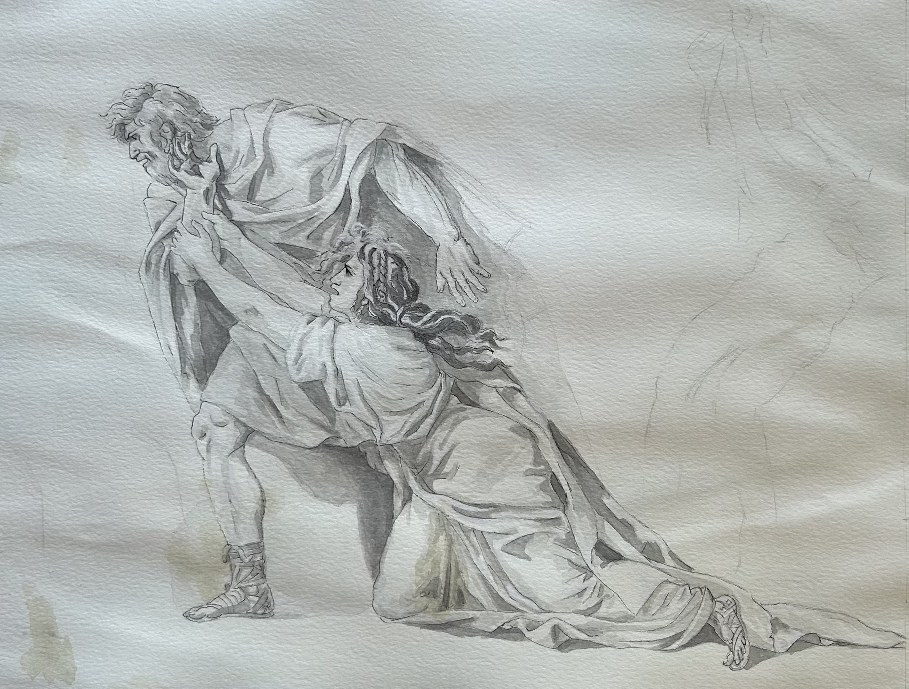

This is a recreation of
The Departure of Marcus Attilius Regulus for Carthage
(1775-1786) by Jacques Louis David. I made this illustration with black ink pen and watercolor with black chalk on watercolor paper.
[Back to Samples]